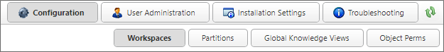

When importing XML files from another system, always import the Partition XML file first, then Global Knowledge Views, and the Workspaces last.
When importing XML files from another system, always import the Partition XML file first, then Global Knowledge Views, and the Workspaces last.

This section of the IT Admin area enables you to configure the Workspaces, Partitions, and Global Knowledge Views in your installation. Additionally, this section contains an Object Perms page to create a report of object permissions on your system. Workspaces will be discussed below, while the linked topics will cover the remaining items in this section of the IT Admin area.
When importing XML files from another system, always import the Partition XML file first, then Global Knowledge Views, and the Workspaces last.
The Configuration section consists of four configuration pages. You can navigate to each page using the Table of Contents displayed at the upper left corner of the page, or use the links below.
Workspaces: Defines the appearance and content on a user’s homepage, or home pages, if the user is member of more than one workspace.
Partitions: Separate data stores or independent sections of a Process Director installation which don't interact with each other or share data.
Global Knowledge Views: Knowledge Views that are available to all users across all partitions.
Object Perms: A searchable permissions report that indicates which users have access to which Process Director Objects, and the permissions they've been granted.